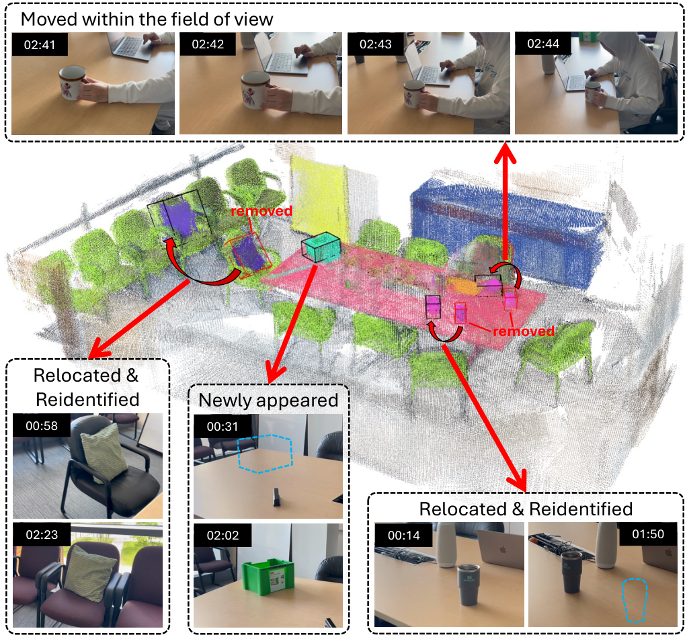

Paper Notes
Problem and Representation
本文针对在线开放词汇语义建图中的“只追加、不修订”问题。传统 object-centric map 将新点不断融合，却很少重新检查已经写入的点，因此分割边界错误、深度噪声和物体移动会长期残留。
每个对象由 3D points、point-level confidence、label histogram、box、观测时间以及 CLIP/DINO descriptors 组成。输入是 RGB-D、检测 mask、语义标签和相机位姿；输出是可查询的对象地图。
Paper Notes
Reading the Online Refinement Pipeline

Taimeng Fu et al. · Original figure, unmodified · CC BY 4.0 · Paper & Caption ↗
图 1 展示从检测、跟踪和 re-identification 到 point-level confidence update 的流程。当前检测中的点得到正证据；可见但不在 mask 内的点得到负证据；沿同一光线却与当前深度矛盾的 miss 点也被降权。
点的置信度不是一次性的融合权，而是随时间更新的状态。对象离开视野不会立即被删除，因为不可见可能来自遮挡；可见性推理先区分暂时不可见和被当前观测否定。
Paper Notes
Confidence Update and Pruning
作者把点置信度写成 log-odds。inlier 点按检测置信度增加证据，visible out-of-mask 点减去预设值，miss 点按深度矛盾减去另一项。低于阈值的点被 prune，过小实例也会移除。
这让“语义”和“几何”在同一个更新环节相遇：mask 决定语义支持，depth 和 visibility 决定几何是否仍可信。对象 tracking 与 feature re-identification 则负责在运动或离开视野后保持身份。
l_t(p) = l_{t-1}(p) + e_t(p)
p_t(p) = sigmoid(l_t(p))
prune if l_t(p) < τPaper Notes
Experiments and Mapping Accuracy
作者在 Replica 和 ScanNet 上比较 ConceptGraphs、HOV-SG、DualMap 与本方法，指标为 mIoU、F-mIoU、mAcc，并排除背景主导类别。相对在线基线 DualMap，mIoU 在 Replica 提升 3.46%，ScanNet 提升 2.55%；F-mIoU 分别提升 5.84% 和 3.44%。
消融中去掉 confidence update 后，Replica 的 duplication 从 1.1690 增至 1.2568；去掉 fragment merging 后增至 1.3426。这说明点级修订影响的不只是类别分数，也影响重复实例和碎片。
Paper Notes
Dynamic Scenes and Robustness
在物体移动、移除和错误检测实验中，点级 visibility reasoning 让旧位置的点在后续 1–2 帧内被削弱。相对 DualMap，本方法在 relocation 后保留 92.3% 的对象，在 stale-object removal 中移除全部 26 个旧实例；re-identification 为 26 个移动对象中的 20 个恢复原身份。
作者还对分割边界加入 Gaussian noise。性能下降较小的原因是错误点在多帧中缺少一致支持，最终被置信度更新抑制。这个证据比只展示一次干净 mask 更接近真实在线系统。
Paper Notes
Runtime and Downstream Use
superpoint 或对象级处理和 batched execution 使方法在同一硬件上降低 CPU/GPU 内存与平均每帧时间；它不保存完整历史观测 buffer，而是保留可修订的对象点。
在 Spot 机器人上，object navigation 成功率 82.4%，EQA 成功率 76.7%。这些结果说明地图可作为在线空间记忆，但不能直接视为几何重建精度提升，因为下游成功还依赖检测、查询和控制。
Paper Notes
Transfer to LingBot-Map and Limits
对 LingBot-Map 最直接的启发是把 memory 写入从“融合后永久保留”改成“带置信度、可被后续观测削弱”的状态。语义信息进入点/token 的支持证据，几何信息通过深度一致性和可见性决定是否保留。
但论文是对象级 RGB-D semantic mapping，LingBot-Map 是流式重建 token/KV。它不能直接证明语义改善深度、位姿或点云完整度。迁移实验应固定容量，比较 append-only、point/token confidence update，以及语义+几何联合更新，并分别测语义 mIoU、深度/点云误差、完整度和延迟。
Discussion
Reading Questions
What changes compared with append-only fusion?
旧点不再永久保留；后续 mask、depth 和 visibility 可以给它负证据并触发 prune。
Does point confidence equal object identity?
不等于。身份由 tracking 与 re-identification 维护，point confidence 只表示该点证据是否可靠。
How does this inform LingBot-Map?
在固定 memory 预算内保留可修订状态，让语义与几何共同决定写入和遗忘，并用未来帧误差验证是否改善重建。
References
First submitted 2026-10-22. Read 2610.31476v1 on 15 November 2026. One original figure is reproduced under CC BY 4.0. Experimental results are reported by the authors and have not been independently reproduced.
Verified on 2026-11-15. Paper results refer to the linked versions. Repository references were checked on this date.